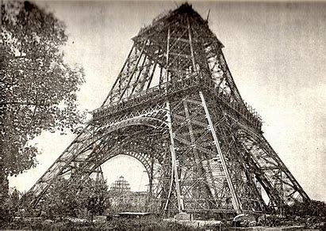
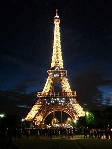
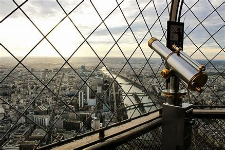

Historia de la Torre Eiffel
La Torre Eiffel fue construida por el ingeniero Gustave Eiffel y su equipo para la Exposición Universal de 1889 en París, conmemorando el centenario de la Revolución Francesa. La torre, que inicialmente recibió críticas de artistas y escritores, pronto se convirtió en un símbolo icónico de la ciudad de París y de Francia en general.
Curiosidades sobre la Torre Eiffel
- La Torre Eiffel mide 324 metros de altura, ¡aproximadamente la misma altura que un edificio de 81 pisos!
- Durante su construcción, se utilizaron más de 18,000 piezas metálicas y 2.5 millones de remaches.
- La torre pesa alrededor de 10,100 toneladas.
- La Torre Eiffel tiene 1665 escalones hasta la cima, pero los visitantes suelen tomar el ascensor.
- Inicialmente, la torre estaba destinada a ser desmontada después de 20 años, pero se salvó debido a su utilidad como torre de transmisión de radio.

Experiencia de la Visita
🎉 Introducción y Espera 🎉
¡Hola chicos! 👋 Hoy vamos a visitar uno de los monumentos más famosos del mundo: ¡La Torre Eiffel! 🗼 Esta torre increíble está en París, la capital de Francia. Es una torre muy alta, mide 324 metros (¡como un edificio de 81 pisos!) y fue construida hace mucho tiempo, en 1889. ¿Estáis listos para descubrir sus secretos y pasar un día emocionante? ¡Vamos allá!
📜 Historia de la Torre Eiffel 📜
La Torre Eiffel fue construida por un ingeniero llamado Gustave Eiffel y su equipo para una exposición llamada "Exposición Universal" en 1889. Esta exposición celebraba los 100 años de la Revolución Francesa. Al principio, algunas personas no estaban contentas con la torre, pero con el tiempo, se convirtió en un símbolo muy importante de París y de toda Francia.
🌟 Curiosidades y Datos Interesantes 🌟
Altura impresionante: La Torre Eiffel mide 324 metros de altura, ¡más alta que 3 campos de fútbol puestos uno encima del otro! 🏗️
Construcción rápida: ¡Se construyó en solo dos años, dos meses y cinco días! ⏱️
Materiales utilizados: La torre está hecha de hierro y se usaron más de 18,000 piezas metálicas y 2.5 millones de remaches para unirlas. 🛠️
Pesada pero fuerte: ¡Pesa alrededor de 10,100 toneladas! 💪
Miles de visitantes: La Torre Eiffel recibe a más de 7 millones de visitantes cada año. ¡Es uno de los lugares más visitados del mundo! 🌍
🚶♂️ Llegada a la Torre Eiffel 🚶♀️
¡Miren chicos! 👀 Desde abajo, la Torre Eiffel se ve impresionante. Si levantáis la cabeza, ¡podréis ver hasta el último piso! 🏢
🛗 Subiendo a la Torre 🛗
Vamos a subir por el ascensor 🚀, pero también podéis tomar las escaleras 🏃♂️ si os sentís valientes. ¡Hay 1665 escalones hasta la cima! 😲
🏗️ Primer Piso 🏗️
Cuando lleguemos al primer piso, encontraréis muchas cosas interesantes para ver y hacer. Aquí hay una lista de lo que podemos encontrar:
- Plataforma de Cristal: En el primer piso, hay una parte del suelo que es de cristal. ¡Es como caminar en el aire! Podréis ver directamente hacia abajo y sentir la emoción de estar a gran altura. ¡Es una experiencia que no se pueden perder!
- Exhibiciones Interactivas: Hay varias exhibiciones donde podemos aprender sobre la construcción de la Torre Eiffel, su historia y cómo se ha mantenido a lo largo de los años. Las pantallas táctiles y las presentaciones hacen que aprender sea divertido y educativo.
- Panoramas y Vistas: Desde el primer piso, ya tendremos unas vistas impresionantes de París. Podréis ver el río Sena, el Campo de Marte y muchos otros monumentos famosos. Es un buen momento para tomar fotos y disfrutar del paisaje.
- Restaurantes y Cafés: Si tenemos hambre o sed, hay restaurantes y cafeterías donde podemos tomar un descanso y disfrutar de una merienda. Hay opciones para todos los gustos, desde helados hasta comidas más completas.
- Tiendas de Recuerdos: Aquí también encontraréis tiendas donde podréis comprar recuerdos de la Torre Eiffel. Desde miniaturas de la torre hasta camisetas y llaveros, ¡hay de todo para llevarse un bonito recuerdo a casa!
- Juegos para Niños: Hay áreas especiales con juegos y actividades para los más pequeños. Es un buen lugar para divertirse y gastar un poco de energía antes de seguir subiendo.
- Datos Curiosos: A lo largo del primer piso, encontraréis paneles informativos con datos curiosos y anécdotas sobre la Torre Eiffel. ¿Sabíais que la torre cambia de color según la estación del año? ¡Descubriremos muchos otros secretos!
🔭 Segundo Piso 🔭
Desde el segundo piso, tendrán una vista increíble de París. 🌆 Pueden ver el río Sena, los Campos Elíseos y muchos otros lugares famosos. ¡Este es un buen momento para tomar fotos y disfrutar de la vista! 📸
- Vistas Panorámicas: Desde aquí, podréis ver casi toda la ciudad de París. ¡Es como estar en la cima del mundo!
- Telescopios: Encontraréis telescopios para observar más de cerca algunos de los monumentos más famosos de París. ¿Podéis ver el Arco de Triunfo o la Catedral de Notre-Dame?
- Fotos Increíbles: Este es el lugar perfecto para tomar fotos espectaculares. No olvidéis capturar esos momentos especiales.
- Áreas de Descanso: Hay bancos donde podéis sentaros y disfrutar de la vista mientras descansáis un poco.
- Guías y Paneles Informativos: Encontraréis más información sobre lo que estáis viendo en los paneles informativos y las guías interactivas.
🗼 Cima de la Torre 🗼
¡Ahora vamos a la cima de la Torre Eiffel! 🌟 Aquí, podrán ver todo París como si fueran pájaros volando. 🕊️ Es un lugar mágico para mirar alrededor y soñar con tocar el cielo. ☁️
- Vistas Panorámicas: Desde la cima, podréis ver todos los rincones de París. ¡Es una vista espectacular!
- Oficina de Gustave Eiffel: Encontraréis una réplica de la oficina de Gustave Eiffel, donde podréis aprender más sobre el ingeniero y su increíble obra.
- Fotos Increíbles: Este es el lugar perfecto para tomar las mejores fotos de vuestro viaje. No olvidéis capturar esos momentos mágicos. 📸
- Sentir el Viento: En la cima, podréis sentir el viento y la frescura del aire. Es una sensación única.
- Relajarse y Disfrutar: Hay áreas donde podéis sentaros y simplemente disfrutar de la vista y la experiencia de estar en lo más alto de la Torre Eiffel.
⬇️ Bajando la Torre ⬇️
Cuando bajemos, pueden comprar recuerdos en las tiendas y quizás disfrutar de un helado. 🍦 También hay jardines alrededor donde podemos descansar y jugar un rato. 🌳
- Tiendas de Recuerdos: Podrán encontrar todo tipo de souvenirs de la Torre Eiffel. ¡Desde miniaturas hasta camisetas y postales! 🎁
- Deliciosos Helados: Disfruten de un delicioso helado mientras pasean por los jardines. 🍨 ¡Una forma perfecta de refrescarse después de la visita!
- Jardines y Áreas de Descanso: Hay bonitos jardines alrededor de la torre donde podemos sentarnos, relajarnos y jugar un rato. 🌺 Es un buen momento para descansar y disfrutar de la naturaleza.
- Fotos de Despedida: Antes de irnos, no olviden tomar algunas fotos de despedida con la Torre Eiffel de fondo. 📸 ¡Será un recuerdo especial de este día increíble!
Fotos de la Torre Eiffel

